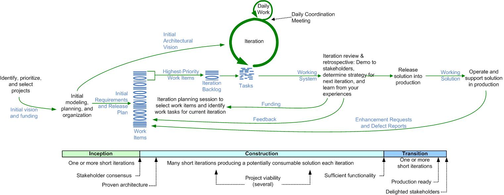
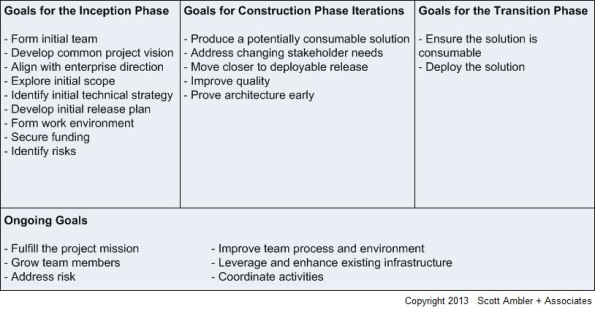

�
»
»
DADのライフサイクル
DAD概要
DADのライフサイクル
DADのライフサイクルについて説明します。DADのライフサイクルは新しく独自に作成しものではなく、RUPとSCRUMのハイブリッドプロセスと云っても大きく間違いではありません。
ライフサイクル概要
DADのライフサイクルは、明確に規定された３フェーズ（方向付けフェーズ、構築フェーズ、移行フェーズ）と、各フェーズ内で実施される複数回のイテレーションで構成されています。下図は、DADのライフサイクル全体を俯瞰したイメージです。

DADの各フェーズには、下表で示す通りゴールが定義されています。また、３フェーズ（方向付けフェーズ、構築フェーズ、移行フェーズ）にまたがって横断的に実施する作業については、「横断的に実施する作業」として別にまとめられています。

方向付けフェーズ
方向付けフェーズとは
方向付けフェーズでは、プロジェクトのゴールを確認します。
無作為にソリューションの構築を開始するのではなく、プロジェクトのゴールを確認することに意義があります。
従来の開発手法ではプロジェクトのゴールを詳細に定義していました。しかし、DADではソリューションの構築中にゴールが変化することを許容することから詳細な定義を行わず、おおよそのゴールのイメージや、方向性などを確認するに留めます。最終的なゴールは、ソリューションを構築しながら詳細に詰めていきます。
DADでは方向付けフェーズを、複数イテレーションを回すことは基本的にありません。
方向付けフェーズのゴール
- 初期チームの編成
- プロジェクトのビジョンを特定
- 利害関係者のビジョンの合意を取り付ける
- 企業の方針に準ずる
- 初期の技術戦略、初期の要求、初期リリース計画を策定する
- 作業環境をセットアップする
- 予算確保
- リスクの特定
方向付けフェーズのアプローチ（アクティビティー）
- 調整
-
- チームの立ち上げ
- 構想選定セッションのための利害関係者収集
- 協働
-
- チームの確立
- 要求の構想
- アーキテクチャーの構想
- 実現可能性の検討
- エンタープライズ戦略との調整
- リリース計画（初期）
- 共有ビジョンの策定
- 環境構築
- 完成
-
- マイルストーンレビュー（簡易）
- 利害関係者とのビジョンの合意
構築フェーズ
構築フェーズとは
構築フェーズは、要求された機能を構築します。
利害関係者が提示した要求一覧から、優先順位の高い要求を切り出し、1週間から4週間程度の決められた期間(TimeBox)で使用可能なソリューションを構築します。この決められた期間のことをイテレーションと呼びます。ひとつのイテレーションが終わると次のイテレーションを開始し、要求一覧のなかから優先順位の高い要求を切り出し使用可能なソリューションを構築していきます。
各イテレーションの最後には、使用可能なソリューションを利害関係者の前でデモを行います。デモを見た利害関係者から新たな要望が提示された場合は、要求一覧に新たな要求を追加します。各イテレーションの最初に、利害関係者と要求一覧に記載している各要求の優先順位を見直します。DADは、短い期間ごとに要求や優先順位を見直し使用可能なソリューションを構築することで、日々変化する利害関係者のビジネスに合わせたソリューションを構築していきます。
構築フェーズのゴール
- 潜在的に使用可能なソリューションを構築する
- 利害関係者のニーズの変化に応える
- デプロイ可能なリリースへ近づける
- 現在の品質レベルを維持・向上させる
- アーキテクチャを早期に実証する
構築付けフェーズのアプローチ(アクティビティ)
- 調整
-
- 協働（標準プラクティス）
-
- 作業の可視化
- 日次調整ミーティング
- リファクタリング
- 開発者によるリグレッションテスト
- モデルストーミング
- 継続的インテグレーション（CI)
- 持続可能なペース
- 要求の優先順位付け
- アーキテクチャースパイク
- 共同所有
- バーンダウンチャート
- メトリクスの自動化
- 協働（上級者向けプラクティス）
-
- テスト駆動開発（TDD)
- 受け入れTDD（ATDD)
- 継続的デプロイ（CD)
- 先行モデリング
- 並行した独立テスト
- 継続的文章化
- チーム開発
- 先行イテレーション計画
- 完成
-
- イテレーションデモ
- ふりかえり
- リリース計画（更新）
- ”前進”戦略の決定
移行フェーズ
移行フェーズとは
移行フェーズでは、構築したソリューションを運用環境に載せます。
移行には、構築したシステムをサーバに配置するだけではなく、利害関係者が使用するマニュアルの作成であったり、教育といった作業も含まれます。また、移行する手段も最初は特定の利害関係者にのみ公開してから、すべての利害関係者に公開するなど、ソリューションを公開するなどの手順を取る必要がある場合もあります。
移行フェーズのゴール
- ソリューションの運用準備が整っていることを確認する
- 利害関係者のソリューション受入準備が整っていることを確認する
- ソリューションを運用環境に載せる
移行フェーズのアプローチ(アクティビティ)
- 調整
-
- 協働
-
- 移行計画
- ライフサイクル終了テストとデバッグ
- データおよびユーザ情報のマイグレーション
- パイロット／ベータプログラムの実施
- 文章の最終版作成
- 運用チームとの調整
- サポート環境の準備
- 利害関係者への教育
- 完成
-
横断的に実施する作業
横断的に実施する作業とは
横断的に実施する作業は、プロジェクトを通して意識、ないし、実施するべき事柄です。
その基底には、チームメンバー同士が協調しながら個々人のスキルを向上しながら、チームメンバー全員が団結してプロジェクトのゴールを目指す、という考えがありあます。
横断的に実施する作業のゴール
- プロジェクト目標の達成
- チームメンバーのスキル向上
- チームのプロセスと環境を改善
- 既存のインフラの活用
- 既存のインフラを拡張
- リスクの対処